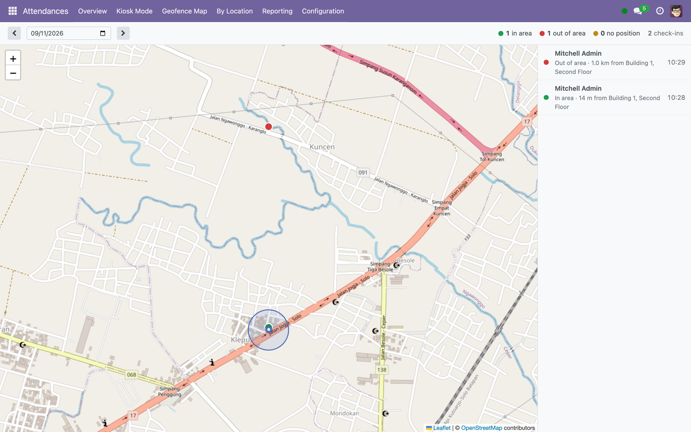
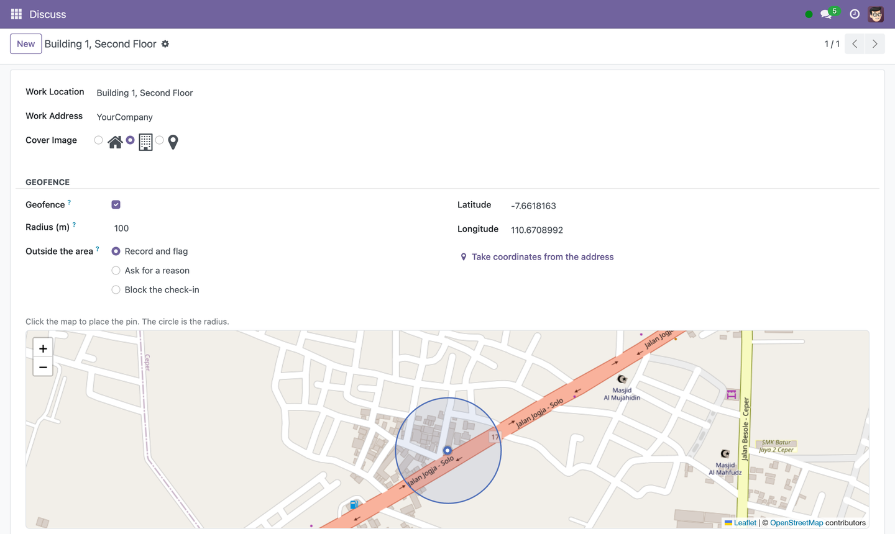
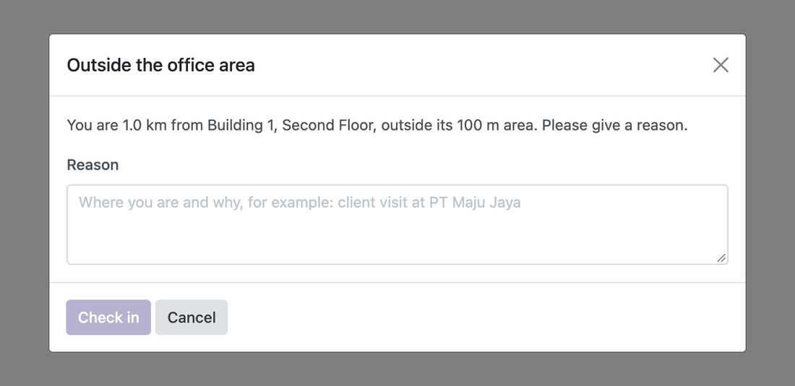
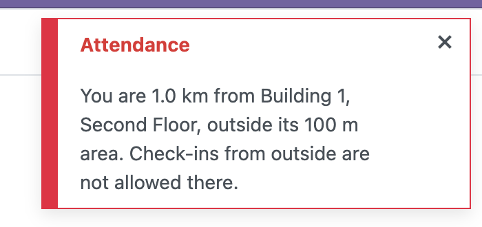
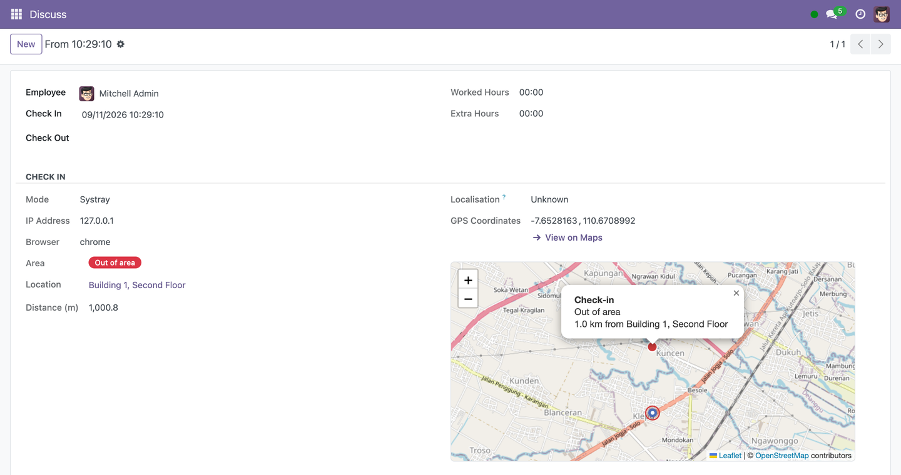

A radius on every office, a map on every check-in, and a policy for people outside it
Draw a circle around each office. Every check-in and check-out Odoo records is then judged against it — In area, Out of area or No position — with the distance, a map, and a rule for what happens next. Built on the coordinates and the work locations Odoo already keeps, so there is no second list of offices and no second GPS capture.

The map of the day. Every office with its circle, every check-in as a dot coloured by its verdict, and a list beside it with the problems first. Click a person to see the distance and the reason they gave; click through to the attendance.
Odoo's own coordinatesOdoo records GPS coordinates on every check-in from the systray and the kiosk. This module judges those. It captures nothing of its own, so it cannot disagree with Odoo about where someone was. |
Odoo's own officesThe radius lives on Work Locations, which Odoo already links to every employee. Any number of branches; and when HR moves someone to another branch, the geofence moves with them. |
More than one officeAn employee is judged against their work location plus any others they are allowed at. Inside any of them is In area. People whose work is not at a fixed address can be exempted. |

Setting up an office: click the map to place the pin, type a radius and watch the circle follow, or take the coordinates from the address. Then choose what happens to someone outside it.
Record and flagThe check-in succeeds and is marked Out of area with the distance. HR sees it in the list, the map and the report. Nobody is interrupted. |
Ask for a reasonBefore the check-in, the person sees how far they are from which office and types why. The reason is stored with the attendance. |
BlockThe check-in is refused, and the message says by how much. Enforced on the server at the one method every check-in goes through, so nothing in a browser can get around it. |
|
 |
 |
The head office can be strict and the field team's base lenient. When someone is outside all of their locations, the policy of the nearest one applies.

On every attendance: the verdict, the office, the distance, the reason if one was given, and a map of the person against the circle as it was that day. Check-out is judged too.
What the device says about itselfAn accuracy of exactly 0 m, which real GPS hardware never reports. A fix minutes old, served from a cache. A device claiming highway speed while standing at a desk. Each is flagged with a note saying which. |
What the server can work out aloneA check-out 35 km from the check-in five minutes earlier would have needed 420 km/h. That needs no cooperation from the device at all, which is the point. Flagged, not refused: the decision stays with HR. |
Report by locationAttendances grouped by office, with In area / Out of area counts, as a list, a pivot and a chart. Filters for each verdict and for flagged positions on the normal attendance views too. |
KioskKiosk check-ins are judged and mapped like any other. A kiosk is a shared device standing where HR put it, so it does not ask for reasons, and Block only applies when it actually has a position. |
Judge again, laterVerdicts are records of the past and keep the circle they were judged against. Moved a pin, or installed on a database with months of attendances? Select them and use Evaluate geofence. |
Built on Odoo Community modules only, so it runs on both editions. Available for
Odoo 17.0, 18.0 and 19.0. It depends on hr_attendance and nothing else,
adds no model of its own, and stores everything on Odoo's work locations, employees
and attendances — nothing to migrate, nothing lost on uninstall. Maps are drawn
with Leaflet (bundled) on OpenStreetMap tiles; the tile server is a setting.
On Odoo 19, coordinates are only recorded when Device & Location Tracking and Attendances from Backend are enabled in the Attendances settings; both are off by default there, and the settings page says so.